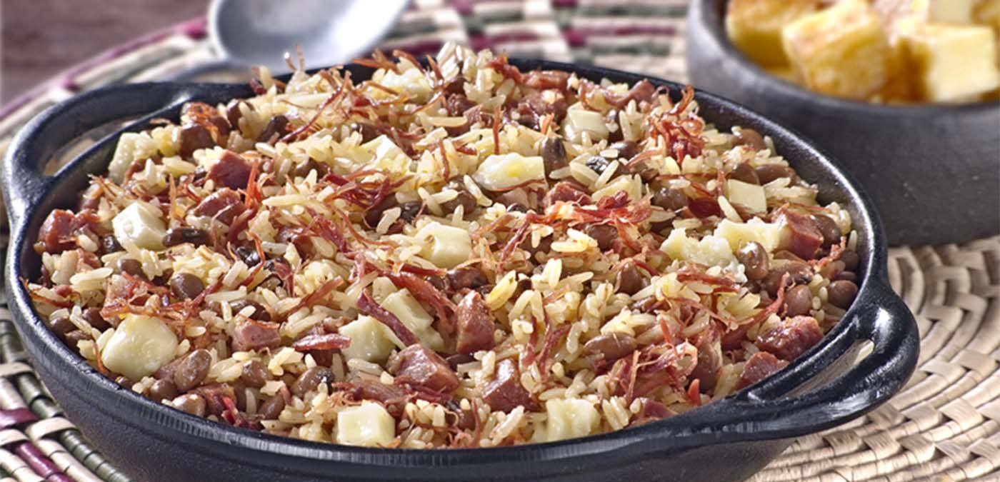
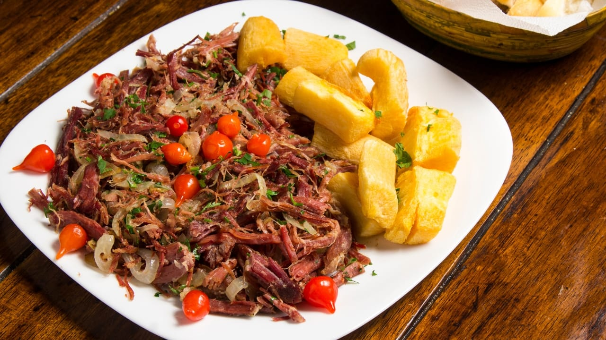

No Tempero de Mainha, trazemos a autêntica comida nordestina direto para sua mesa.
Com ingredientes frescos e receitas tradicionais, oferecemos uma experiência gastronômica inesquecível.
Cardápio
Baião de Dois
Arroz, feijão verde, carne seca desfiada e queijo coalho.

Carne de Sol com Macaxeira
Carne de sol grelhada acompanhada de macaxeira frita e manteiga de garrafa.

Moqueca de Peixe
Peixe cozido com leite de coco, dendê, pimentões e coentro.